Chapter 27: MatPlotLib / matplotlib
27.1 Timothy H. Wu
巫孟叡
- API = application programming interface
https://matplotlib.org/stable/tutorials/introductory/quick_start.html
Fig. 27.1: matplotlib figure anatomy
https://pbpython.com/effective-matplotlib.html

Fig. 21.1: matplotlib subplot anatomy
https://tex.stackexchange.com/questions/84847/can-i-use-webp-images-in-latex
You probably need to convert the image to png.
27.1.1 funcitonal API
To plot a scatterplot, call
scatter()instead ofplot().
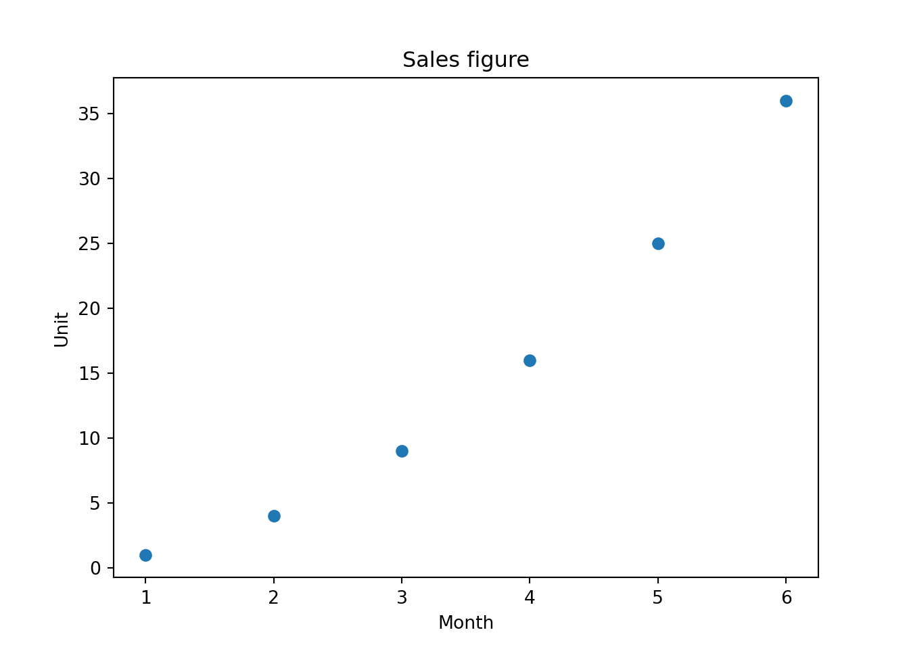
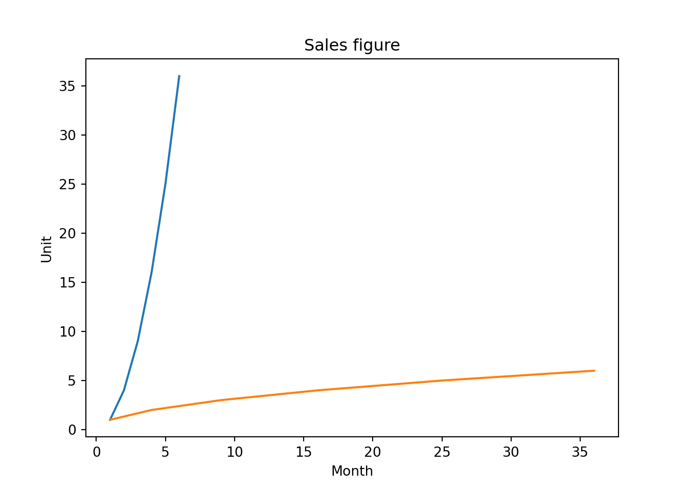
The behavior of the functional API is stateful. What’s stateful? An example is when you read a text file. When you
open()a text file to read, the library read the next line every time you callreadline(). It rememember where you left off, despite the fact that you do not give it the position to read from. This behavior of the library is called stateful. The way we’ve used Matplotlib is also stateful. And everytime,plot.show()is called (and it automatically gets called on cell ends), some state about plots is reset. We can see that here:
import matplotlib.pyplot as plt
a1 = list(range(1, 7)) # [1, 2, 3, 4, 5, 6]
a2 = [1, 4, 9, 16, 25, 36]
plt.title('Sales figure')
plt.xlabel('Month')
plt.ylabel('Unit')
plt.plot(a1, a2)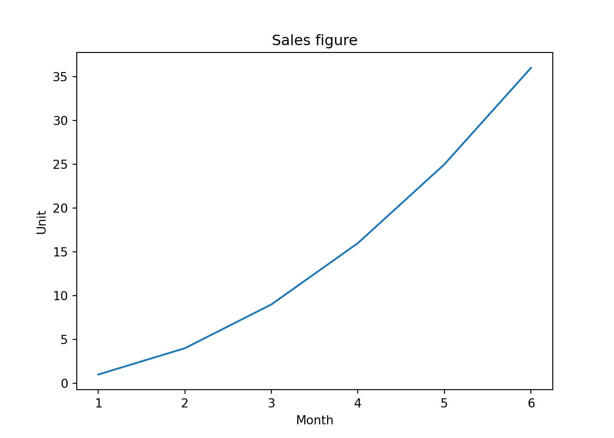
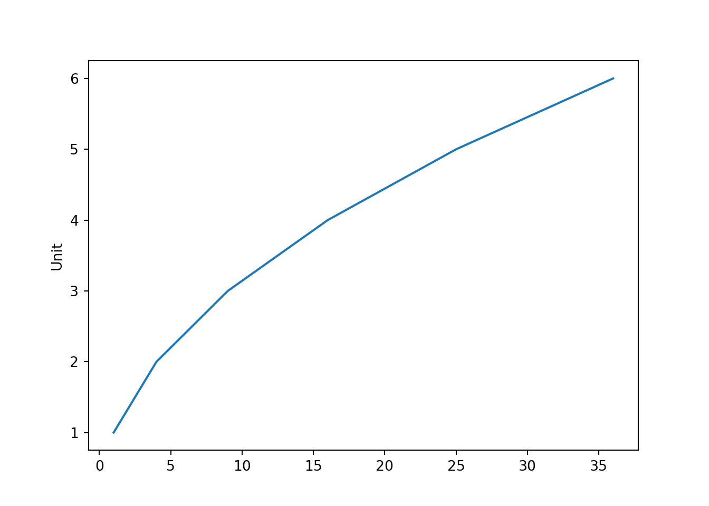
It makes two graphs instead of one. Also note that
ylabel()was called afterplot(), and it is still shown beforeplot.show()butSales Figureplot title and other labels don’t show up on this graph. Because every timeplot.show()is called, things are reset. This is astateful APIwe’re using. The functional APIs are used when you plot Matplotlib by calling onpyplotmodule level API (module level functions).
27.1.2 object-oriented API
In object-orinted API, we’re getting two type of objects. One is
Figure, the other one isAxes. Figure is the canvas of the plot. In English, axes is the plural form of axis. We’re talking about the axis in x axis and y axis. Since one plot consists of both axis, in MatPlotlib the object that represents one plot is calledAxes. Since it’s an object. We’ll call it “a” axes.
import matplotlib.pyplot as plt
a1 = list(range(1, 7)) # [1, 2, 3, 4, 5, 6]
a2 = [1, 4, 9, 16, 25, 36]
fig = plt.figure()
print("fig is of type:", type(fig))## fig is of type: <class 'matplotlib.figure.Figure'>ax1 = fig.add_axes([0, 0, 1, 1]) # [left, bottom, width, height]
print("ax1 is of type:", type(ax1))## ax1 is of type: <class 'matplotlib.axes._axes.Axes'>
- Call
figure()to get a Figure type- Call
add_axes()to get a ax1 typeax1 = fig.add_axes([0, 0, 1, 1]) # [left, bottom, width, height]
- The list given to
add_axes()is the rectangular region of where to show the plot:
- Bottom left corner at x=0, y=0, width and height of both 1, 1
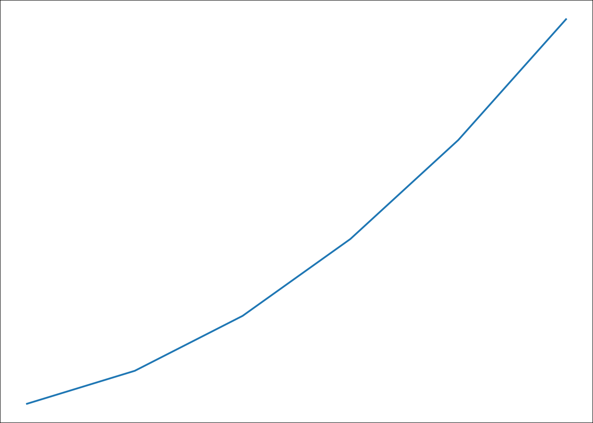
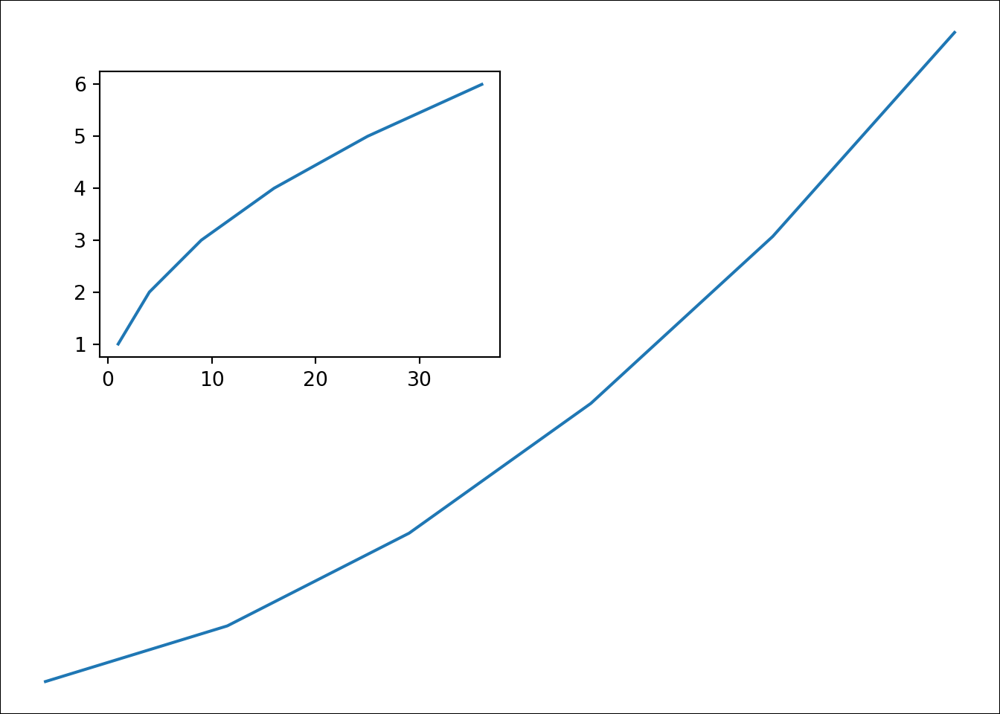
import matplotlib.pyplot as plt
a1 = list(range(1, 7)) # [1, 2, 3, 4, 5, 6]
a2 = [1, 4, 9, 16, 25, 36]
fig = plt.figure()
ax = fig.add_axes([0, 0, 1, 1])
ax.plot(a1, a2)
ax.set_xlabel('Time')
ax.set_ylabel('Unit')
ax.set_title('Sales figure')
# alternatively:
# ax.set(xlabel='Time', ylabel='Unit', title='Sales figure')

27.1.2.1 Configure the figure size and DPI
Get image size for the figure object. 6 by 4 is the default.
fig.get_size_inches()
## array([7., 5.])
fig = plt.figure(figsize=(2, 4))
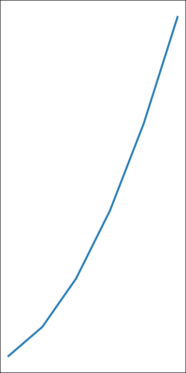
fig.set_size_inches((4, 2))
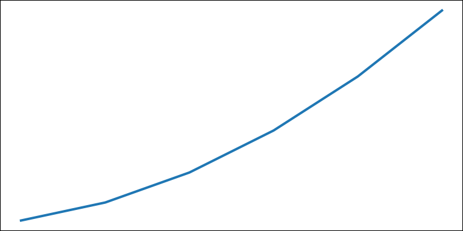
DPI = dots per inch
Get image DPI for the figure object. 100 is the default here.
fig.get_dpi()
## 100.0
import matplotlib.pyplot as plt
a1 = list(range(1, 7)) # [1, 2, 3, 4, 5, 6]
a2 = [1, 4, 9, 16, 25, 36]
fig = plt.figure()
# you can also set after getting the figure
fig.set_size_inches((12, 2))
ax = fig.add_axes([0, 0, 1, 1])
ax.plot(a1, a2)
plt.title('Sales figure')
fig.get_dpi()## 100.0
27.1.2.2 subplot
import matplotlib.pyplot as plt
# Subplots handles add_axes for you according to the number of rows and columns
fig, axes = plt.subplots(nrows=2, ncols=2, figsize=(6, 3))
# axes is a numpy array, you can use it like using a list.
print(axes)## [[<Axes: > <Axes: >]
## [<Axes: > <Axes: >]]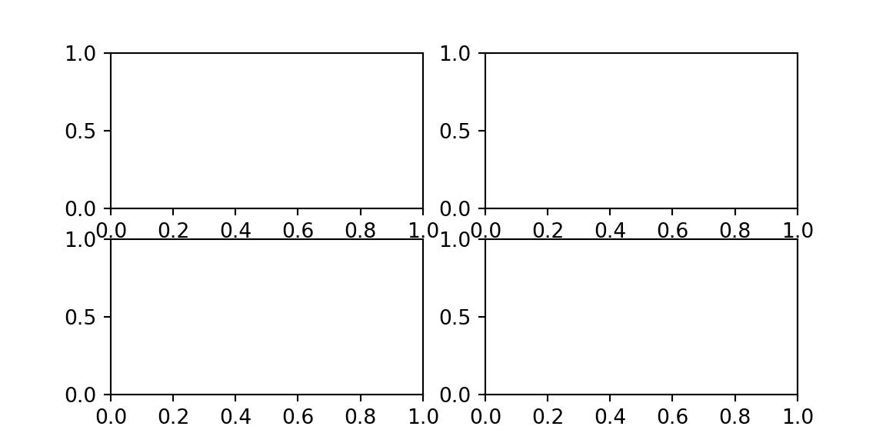
import matplotlib.pyplot as plt
a1 = list(range(1, 7)) # [1, 2, 3, 4, 5, 6]
a2 = [1, 4, 9, 16, 25, 36]
# Subplots handles add_axes for you according to the number of rows and columns
fig, axes = plt.subplots(nrows=2, ncols=2, figsize=(6, 3))
# axes is a numpy array, you can use it like using a list.
# print(axes)
axes[0][0].plot(a1, a2)
axes[0][1].plot(a1, a2)
axes[1][0].plot(a2, a1)
axes[1][1].plot(a2, a1)
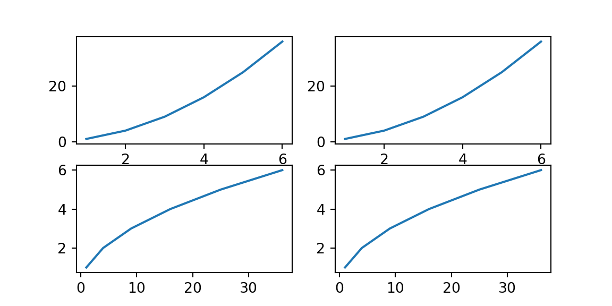
27.1.2.3 color and linestyle
- Color
- line-style (ls)
- marker
- linewidth (lw)
import matplotlib.pyplot as plt
a1 = list(range(1, 7)) # [1, 2, 3, 4, 5, 6]
a2 = [1, 4, 9, 16, 25, 36]
# Subplots handles add_axes for you according to the number of rows and columns
fig, axes = plt.subplots(nrows=1, ncols=2, figsize=(6, 3))
# axes is a numpy array
axes[0].plot(a1, a2, color='green', linestyle='-.')
axes[0].plot(a2, a1, color=(1, 0, 0.5), marker='v', markersize=20)
axes[1].plot(a1, a2, linestyle='dotted')
axes[1].plot(a2, a1, linestyle=(0, (3, 10, 1, 10)))


27.1.2.6 customize style
predefined styles
## ['Solarize_Light2', '_classic_test_patch', '_mpl-gallery', '_mpl-gallery-nogrid', 'bmh', 'classic', 'dark_background', 'fast', 'fivethirtyeight', 'ggplot', 'grayscale', 'seaborn-v0_8', 'seaborn-v0_8-bright', 'seaborn-v0_8-colorblind', 'seaborn-v0_8-dark', 'seaborn-v0_8-dark-palette', 'seaborn-v0_8-darkgrid', 'seaborn-v0_8-deep', 'seaborn-v0_8-muted', 'seaborn-v0_8-notebook', 'seaborn-v0_8-paper', 'seaborn-v0_8-pastel', 'seaborn-v0_8-poster', 'seaborn-v0_8-talk', 'seaborn-v0_8-ticks', 'seaborn-v0_8-white', 'seaborn-v0_8-whitegrid', 'tableau-colorblind10']
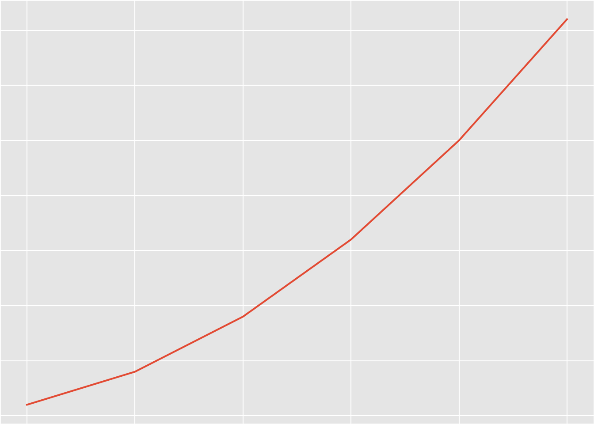
restore default style
27.1.2.7 save to file
savefigsaves image to file. We also set thebbox_inchesparameter totightto make sure the image doesn’t get out of the image bound.
save to .png
import matplotlib.pyplot as plt
a1 = list(range(1, 7)) # [1, 2, 3, 4, 5, 6]
a2 = [1, 4, 9, 16, 25, 36]
fig = plt.figure()
ax = fig.add_axes([0, 0, 1, 1])
ax.plot(a1, a2)
fig.savefig('out.png', bbox_inches = 'tight')save to .pdf
27.1.3 Seaborn
Fig. 27.2: seaborn plot type
- Seaborn
- figure-level plot
- axes-level plot
R or RStudio run Python with installing packages or modules by using reticulate, R package
and directly using Anaconda conda environment for convenience, instead of virtualenv
https://rstudio.github.io/reticulate/articles/python_packages.html
## Warning: package 'reticulate' was built under R version 4.3.3## name
## 1 base
## 2 mm
## 3 mmr
## 4 monai
## 5 pytorch
## 6 pytorch_1.12.1_cuda_11.6
## 7 r-reticulate
## 8 sandbox
## 9 sandbox-3.9
## 10 sandbox_py_3.10
## 11 v51
## python
## 1 C:\\Users\\RW\\anaconda3/python.exe
## 2 C:\\Users\\RW\\anaconda3\\envs\\mm/python.exe
## 3 C:\\Users\\RW\\anaconda3\\envs\\mmr/python.exe
## 4 C:\\Users\\RW\\anaconda3\\envs\\monai/python.exe
## 5 C:\\Users\\RW\\anaconda3\\envs\\pytorch/python.exe
## 6 C:\\Users\\RW\\anaconda3\\envs\\pytorch_1.12.1_cuda_11.6/python.exe
## 7 C:\\Users\\RW\\anaconda3\\envs\\r-reticulate/python.exe
## 8 C:\\Users\\RW\\anaconda3\\envs\\sandbox/python.exe
## 9 C:\\Users\\RW\\anaconda3\\envs\\sandbox-3.9/python.exe
## 10 C:\\Users\\RW\\anaconda3\\envs\\sandbox_py_3.10/python.exe
## 11 C:\\Users\\RW\\anaconda3\\envs\\v51/python.exeuse_condaenv(condaenv = 'sandbox-3.9')
## install Seaborn
# conda_install("r-reticulate", "seaborn")
## import Seaborn (it will be automatically discovered in "r-reticulate")
seaborn <- import("seaborn")27.1.3.1 basic
import matplotlib.pyplot as plt # need it sometimes
import seaborn as sns
sns.set_theme() # set the default theme
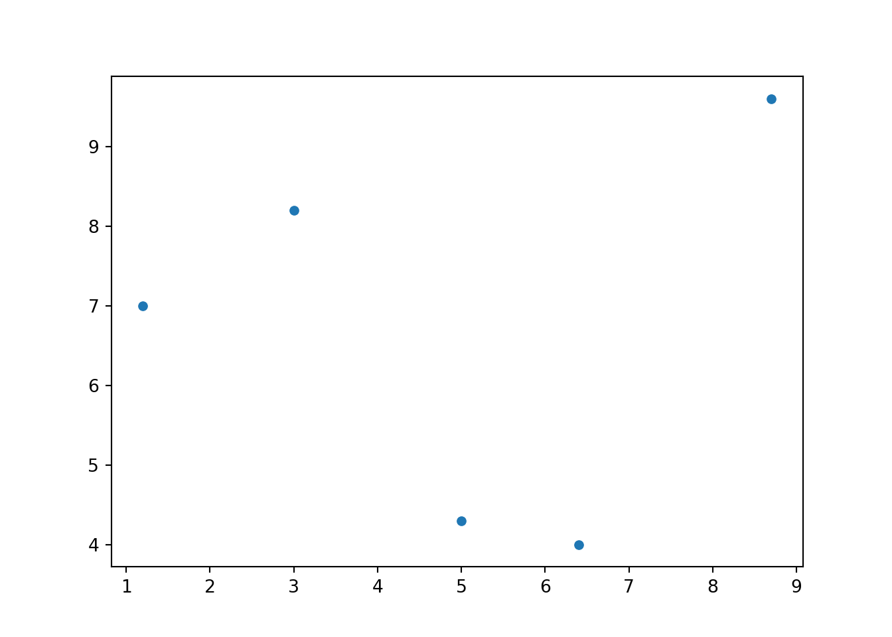

27.1.3.2 data frame
sns.load_dataset
## total_bill tip sex smoker day time size
## 0 16.99 1.01 Female No Sun Dinner 2
## 1 10.34 1.66 Male No Sun Dinner 3
## 2 21.01 3.50 Male No Sun Dinner 3
## 3 23.68 3.31 Male No Sun Dinner 2
## 4 24.59 3.61 Female No Sun Dinner 4
## .. ... ... ... ... ... ... ...
## 239 29.03 5.92 Male No Sat Dinner 3
## 240 27.18 2.00 Female Yes Sat Dinner 2
## 241 22.67 2.00 Male Yes Sat Dinner 2
## 242 17.82 1.75 Male No Sat Dinner 2
## 243 18.78 3.00 Female No Thur Dinner 2
##
## [244 rows x 7 columns]data
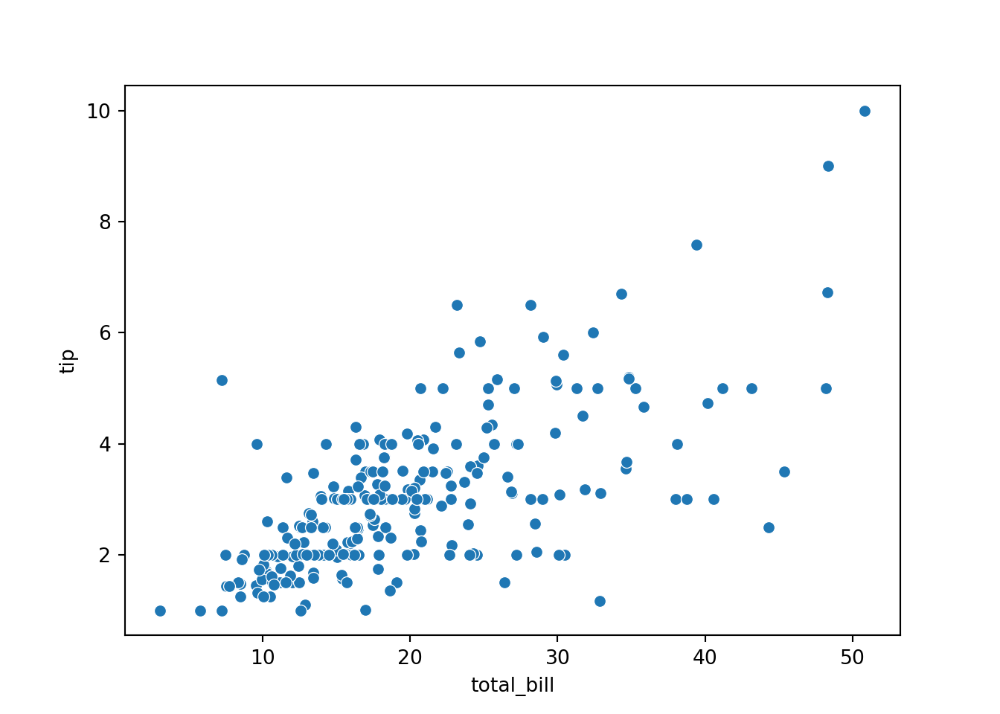
hue

style

size
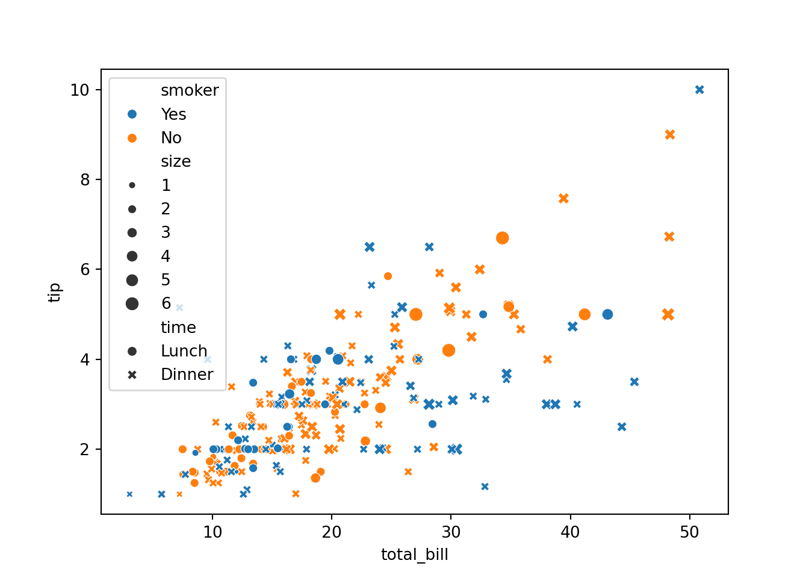
- Legend is covering up the graph, it’s getting out of hand. Let’s tune the range of x
sns.scatterplot()actually returns something that resembles Matplotlib axis. So we use a Matplotlib axis function:
ax = sns.scatterplot(...)
https://stackoverflow.com/questions/26597116/seaborn-plots-not-showing-up
27.1.3.3 axis-level plot and figure-level plot
sns.relplot
Fig. 27.3: seaborn plot type
 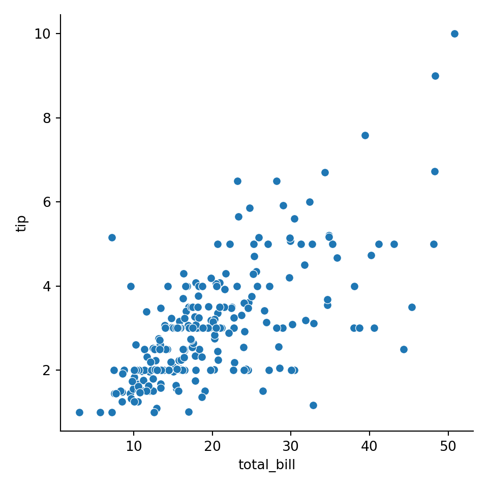
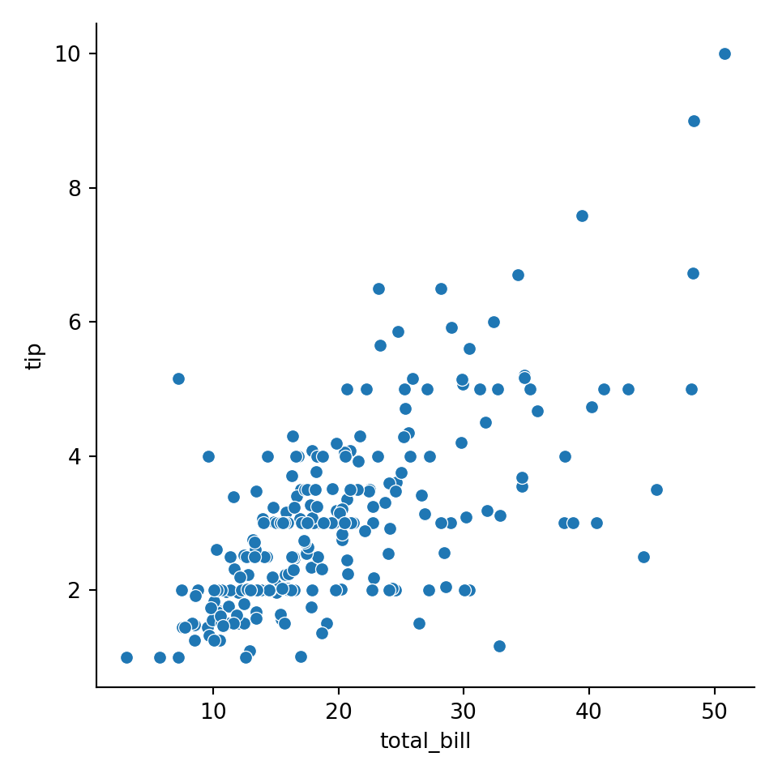
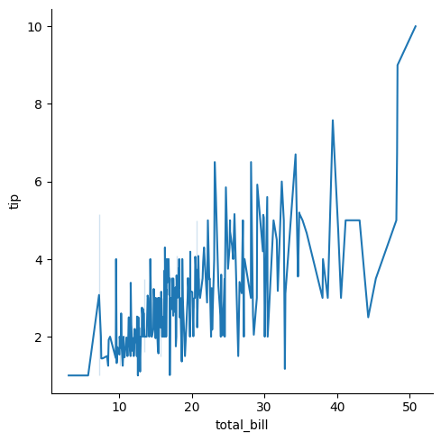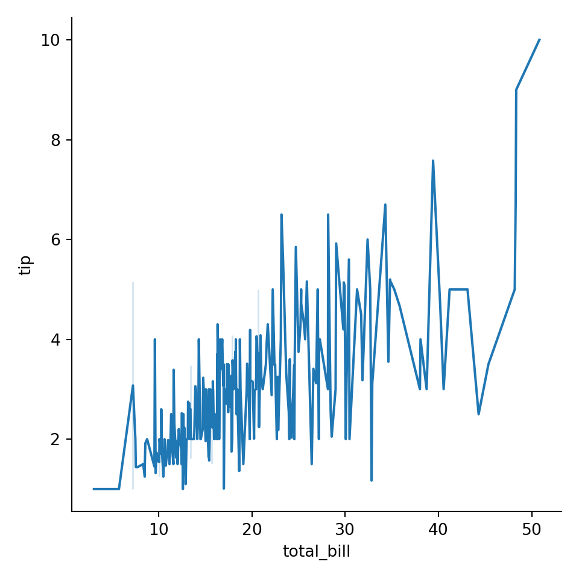
With figure-level plot, we can draw more than one plot (one
axes).
Here we specify that different
sexbe on different column by specifyingcol=sex.
col=sex


col=sex row=smoker
27.1.3.4 accessing fgure and axes objects
Recall that Seaborn uses Matplotlib to draw the graphics. So underneath the Seaborn libray, you can still access Matplotlib’s figure object and axes objects if necessary. The call to figure-level plot returns an object.
## <class 'seaborn.axisgrid.FacetGrid'>## <class 'matplotlib.figure.Figure'>
27.1.3.5 distribution plot
sns.displot


27.1.3.5.3 KDE = kernel density estimation
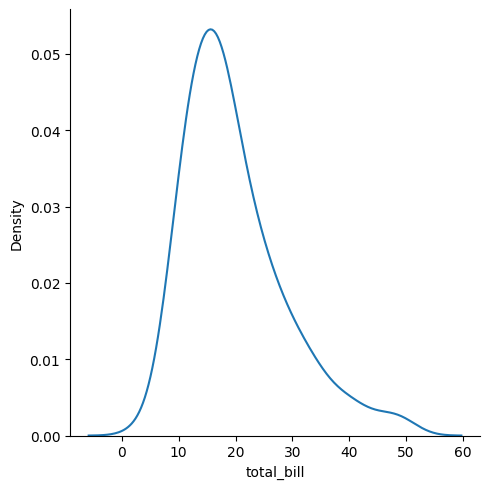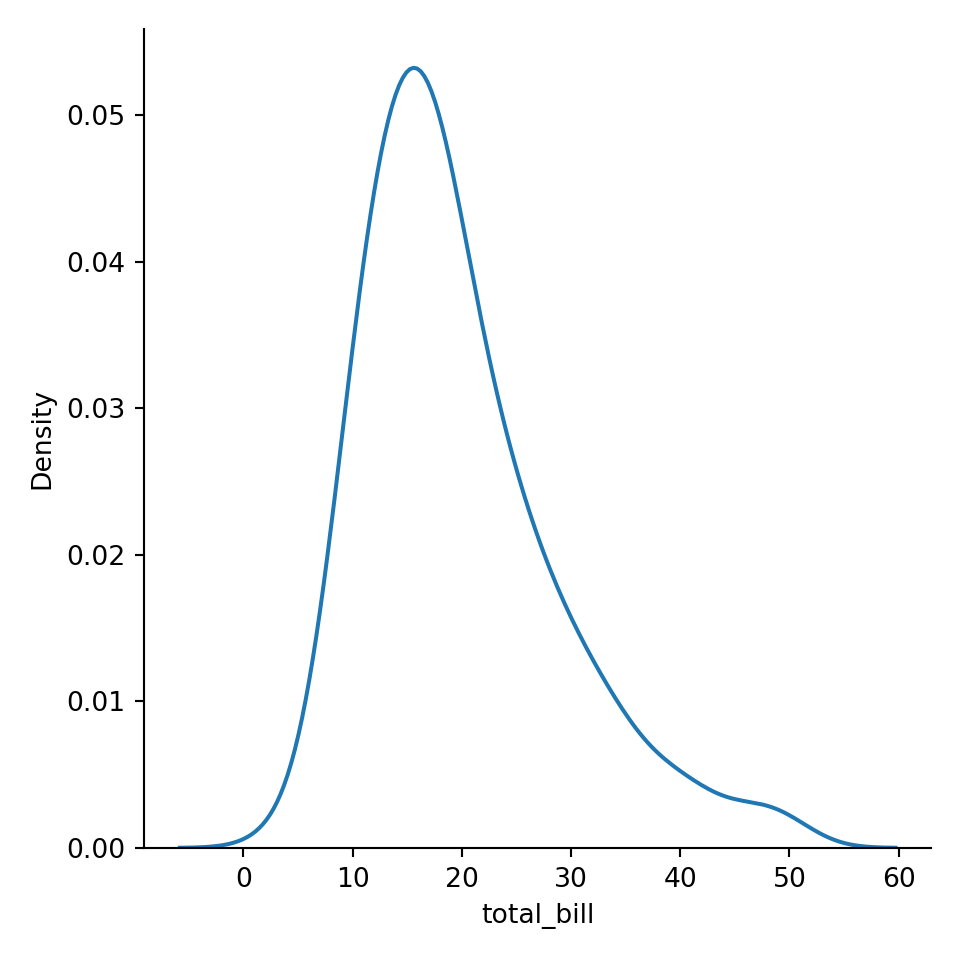
histogram with KDE

## '% This file was created with tikzplotlib v0.10.1.\n\\begin{tikzpicture}\n\n\\definecolor{darkgray176}{RGB}{176,176,176}\n\\definecolor{steelblue31119180}{RGB}{31,119,180}\n\n\\begin{axis}[\ntick align=outside,\ntick pos=left,\nx grid style={darkgray176},\nxlabel={total_bill},\nxmin=0.682999999999999, xmax=53.197,\nxtick style={color=black},\ny grid style={darkgray176},\nylabel={Count},\nymin=0, ymax=38.85,\nytick style={color=black}\n]\n\\draw[draw=black,fill=steelblue31119180,fill opacity=0.5] (axis cs:3.07,0) rectangle (axis cs:5.457,1);\n\\draw[draw=black,fill=steelblue31119180,fill opacity=0.5] (axis cs:5.457,0) rectangle (axis cs:7.844,6);\n\\draw[draw=black,fill=steelblue31119180,fill opacity=0.5] (axis cs:7.844,0) rectangle (axis cs:10.231,13);\n\\draw[draw=black,fill=steelblue31119180,fill opacity=0.5] (axis cs:10.231,0) rectangle (axis cs:12.618,29);\n\\draw[draw=black,fill=steelblue31119180,fill opacity=0.5] (axis cs:12.618,0) rectangle (axis cs:15.005,31);\n\\draw[draw=black,fill=steelblue31119180,fill opacity=0.5] (axis cs:15.005,0) rectangle (axis cs:17.392,37);\n\\draw[draw=black,fill=steelblue31119180,fill opacity=0.5] (axis cs:17.392,0) rectangle (axis cs:19.779,28);\n\\draw[draw=black,fill=steelblue31119180,fill opacity=0.5] (axis cs:19.779,0) rectangle (axis cs:22.166,23);\n\\draw[draw=black,fill=steelblue31119180,fill opacity=0.5] (axis cs:22.166,0) rectangle (axis cs:24.553,18);\n\\draw[draw=black,fill=steelblue31119180,fill opacity=0.5] (axis cs:24.553,0) rectangle (axis cs:26.94,13);\n\\draw[draw=black,fill=steelblue31119180,fill opacity=0.5] (axis cs:26.94,0) rectangle (axis cs:29.327,10);\n\\draw[draw=black,fill=steelblue31119180,fill opacity=0.5] (axis cs:29.327,0) rectangle (axis cs:31.714,9);\n\\draw[draw=black,fill=steelblue31119180,fill opacity=0.5] (axis cs:31.714,0) rectangle (axis cs:34.101,5);\n\\draw[draw=black,fill=steelblue31119180,fill opacity=0.5] (axis cs:34.101,0) rectangle (axis cs:36.488,7);\n\\draw[draw=black,fill=steelblue31119180,fill opacity=0.5] (axis cs:36.488,0) rectangle (axis cs:38.875,3);\n\\draw[draw=black,fill=steelblue31119180,fill opacity=0.5] (axis cs:38.875,0) rectangle (axis cs:41.262,4);\n\\draw[draw=black,fill=steelblue31119180,fill opacity=0.5] (axis cs:41.262,0) rectangle (axis cs:43.649,1);\n\\draw[draw=black,fill=steelblue31119180,fill opacity=0.5] (axis cs:43.649,0) rectangle (axis cs:46.036,2);\n\\draw[draw=black,fill=steelblue31119180,fill opacity=0.5] (axis cs:46.036,0) rectangle (axis cs:48.423,3);\n\\draw[draw=black,fill=steelblue31119180,fill opacity=0.5] (axis cs:48.423,0) rectangle (axis cs:50.81,1);\n\\addplot [semithick, steelblue31119180]\ntable {%\n3.07 1.81650227371093\n3.30989949748744 2.0434643264896\n3.54979899497487 2.2946853892412\n3.78969849246231 2.57191856721816\n4.02959798994975 2.87687103964454\n4.26949748743719 3.2111703368463\n4.50939698492462 3.57632865116155\n4.74929648241206 3.97370595578498\n4.9891959798995 4.40447280025508\n5.22909547738693 4.86957372234809\n5.46899497487437 5.36969226057983\n5.70889447236181 5.90521856710491\n5.94879396984925 6.47622060619422\n6.18869346733668 7.08241987817059\n6.42859296482412 7.72317253298626\n6.66849246231156 8.39745663256822\n6.90839195979899 9.10386618836671\n7.14829145728643 9.84061244261478\n7.38819095477387 10.605532681721\n7.62809045226131 11.3961066717526\n7.86798994974874 12.2094805936589\n8.10788944723618 13.0424981350657\n8.34778894472362 13.8917381722816\n8.58768844221106 14.7535582575524\n8.82758793969849 15.6241429202311\n9.06748743718593 16.4995556046295\n9.30738693467337 17.3757929103925\n9.5472864321608 18.2488396817903\n9.78718592964824 19.1147234183632\n10.0270854271357 19.9695664579337\n10.2669849246231 20.8096344196708\n10.5068844221106 21.6313794931092\n10.746783919598 22.4314773197019\n10.9866834170854 23.2068564344639\n11.2265829145729 23.9547195110843\n11.4664824120603 24.6725559755833\n11.7063819095477 25.3581459088295\n11.9462814070352 26.0095555316024\n12.1861809045226 26.6251249394887\n12.4260804020101 27.2034491092342\n12.6659798994975 27.7433535131461\n12.9058793969849 28.2438659343764\n13.1457788944724 28.7041862560547\n13.3856783919598 29.1236560873048\n13.6255778894472 29.5017300798215\n13.8654773869347 29.8379506761731\n14.1053768844221 30.1319278179194\n14.3452763819095 30.3833248371542\n14.585175879397 30.591851374701\n14.8250753768844 30.7572637330083\n15.0649748743719 30.8793726073093\n15.3048743718593 30.9580576730616\n15.5447738693467 30.9932880701113\n15.7846733668342 30.9851474422087\n16.0245728643216 30.9338618888512\n16.264472361809 30.8398289841961\n16.5043718592965 30.7036459275097\n16.7442713567839 30.5261349162415\n16.9841708542714 30.3083639732627\n17.2240703517588 30.0516617033457\n17.4639698492462 29.7576247830678\n17.7038693467337 29.4281173801778\n17.9437688442211 29.0652621267963\n18.1836683417085 28.671422708\n18.423567839196 28.2491785464713\n18.6634673366834 27.8012924408185\n18.9033668341709 27.3306723300243\n19.1432663316583 26.8403285949087\n19.3831658291457 26.3333284612471\n19.6230653266332 25.8127491361762\n19.8629648241206 25.2816312933759\n20.102864321608 24.7429344316665\n20.3427638190955 24.1994954781583\n20.5826633165829 23.6539918052482\n20.8225628140704 23.1089095957794\n21.0624623115578 22.5665182374548\n21.3023618090452 22.0288511696841\n21.5422613065327 21.4976933549977\n21.7821608040201 20.9745753121716\n22.0220603015075 20.4607734360394\n22.261959798995 19.9573161441721\n22.5018592964824 19.4649952359086\n22.7417587939699 18.9843817259491\n22.9816582914573 18.5158453233279\n23.2215577889447 18.0595766669415\n23.4614572864322 17.615611400536\n23.7013567839196 17.1838551725645\n23.941256281407 16.7641086787571\n24.1811557788945 16.3560919263279\n24.4210552763819 15.9594669865189\n24.6609547738693 15.5738586137688\n24.9008542713568 15.1988722412078\n25.1407537688442 14.8341090082362\n25.3806532663317 14.4791776303403\n25.6205527638191 14.1337030768421\n25.8604522613065 13.7973321712685\n26.100351758794 13.4697363637648\n26.3402512562814 13.150612038339\n26.5801507537688 12.8396788037574\n26.8200502512563 12.5366762713579\n27.0599497487437 12.2413598437652\n27.2998492462312 11.9534960256898\n27.5397487437186 11.6728577243006\n27.779648241206 11.3992199369156\n28.0195477386935 11.1323561346653\n28.2594472361809 10.8720355503384\n28.4993467336683 10.618021475438\n28.7392462311558 10.3700705740342\n28.9791457286432 10.1279331369088\n29.2190452261307 9.89135413483068\n29.4589447236181 9.66007488858728\n29.6988442211055 9.43383515726144\n29.938743718593 9.21237545429534\n30.1786432160804 8.99543942987608\n30.4185427135678 8.78277620282414\n30.6584422110553 8.57414257872065\n30.8983417085427 8.36930514594295\n31.1382412060302 8.16804229007108\n31.3781407035176 7.97014620304912\n31.618040201005 7.77542498131078\n31.8579396984925 7.58370490367017\n32.0978391959799 7.39483295445693\n32.3377386934673 7.20867961205857\n32.5776381909548 7.02514186210763\n32.8175376884422 6.84414632449376\n33.0574371859297 6.66565231214501\n33.2973366834171 6.48965457576794\n33.5372361809045 6.31618544094476\n33.777135678392 6.1453160195762\n34.0170351758794 5.97715618216116\n34.2569346733668 5.81185301380445\n34.4968341708543 5.64958754514477\n34.7367336683417 5.4905696464633\n34.9766331658291 5.33503109293979\n35.2165326633166 5.18321694268858\n35.456432160804 5.03537550629672\n35.6963316582915 4.89174731561885\n35.9362311557789 4.75255360914146\n36.1761306532663 4.61798493100736\n36.4160301507538 4.48819048255514\n36.6559296482412 4.36326886361301\n36.8958291457286 4.24326079384011\n37.1357286432161 4.12814431384217\n37.3756281407035 4.01783283689438\n37.615527638191 3.91217626335446\n37.8554271356784 3.81096519221432\n38.0953266331658 3.71393808027978\n38.3352261306533 3.6207910222994\n38.5751256281407 3.53118966756817\n38.8150251256281 3.44478266114206\n39.0549246231156 3.3612159094193\n39.294824120603 3.28014692600479\n39.5347236180905 3.20125851656009\n39.7746231155779 3.12427110932688\n40.0145226130653 3.04895312649168\n40.2544221105528 2.97512891305667\n40.4943216080402 2.90268388486196\n40.7342211055276 2.83156671514291\n40.9741206030151 2.76178853850247\n41.2140201005025 2.69341930205747\n41.45391959799 2.62658152681276\n41.6938190954774 2.56144185109477\n41.9337185929648 2.49820080763016\n42.1736180904523 2.43708133466766\n42.4135175879397 2.37831653999644\n42.6534170854271 2.32213722758936\n42.8933165829146 2.26875966439028\n43.133216080402 2.21837401507579\n43.3731155778895 2.17113381152285\n43.6130150753769 2.12714675709877\n43.8529145728643 2.08646709892452\n44.0928140703518 2.04908973796103\n44.3327135678392 2.01494618973935\n44.5726130653266 1.9839024589303\n44.8125125628141 1.95575884849134\n45.0524120603015 1.93025168749459\n45.2923115577889 1.90705692886651\n45.5322110552764 1.88579553680867\n45.7721105527638 1.8660405514497\n46.0120100502513 1.84732568370606\n46.2519095477387 1.82915525570066\n46.4918090452261 1.81101526177134\n46.7317085427136 1.79238528356458\n46.971608040201 1.77275095240831\n47.2115075376884 1.75161661627327\n47.4514070351759 1.72851784072741\n47.6913065326633 1.70303335688259\n47.9312060301508 1.67479606749064\n48.1711055276382 1.64350273728161\n48.4110050251256 1.6089220264205\n48.6509045226131 1.57090057632539\n48.8908040201005 1.52936692339272\n49.1307035175879 1.48433309547015\n49.3706030150754 1.43589383418153\n49.6105025125628 1.38422347865573\n49.8504020100503 1.32957063768011\n50.0903015075377 1.27225086266426\n50.3302010050251 1.21263760837119\n50.5701005025126 1.15115182824249\n50.81 1.08825059345319\n};\n\\end{axis}\n\n\\end{tikzpicture}\n'
TikZ / tikzpicture with PGFplots axis by transforming Matplotlib-based Seaborn plot to .tex via Python package tikzplotlib
xlabel={total_bill}, changed to xlabel={total bill}, wihout _ in text
X ylabel={Count}, changed to ylabel={$\text{Count}$},: not necessoary to be changed, the problem is _ in xlabel name
Fig. 13.33: tikzplotlib
 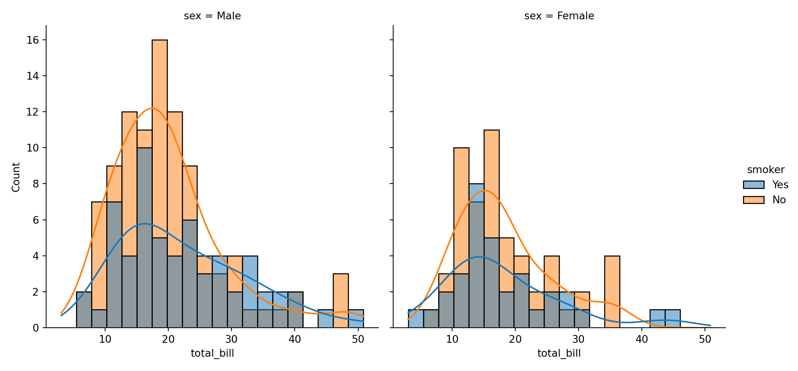
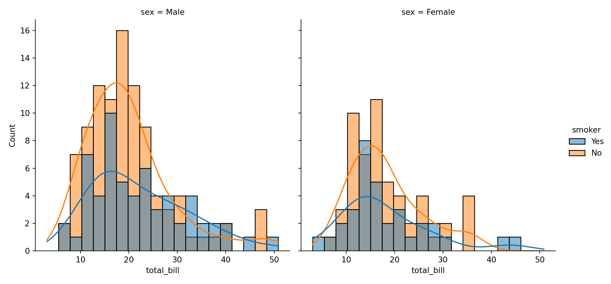
Let’s cutomize the label and title.

 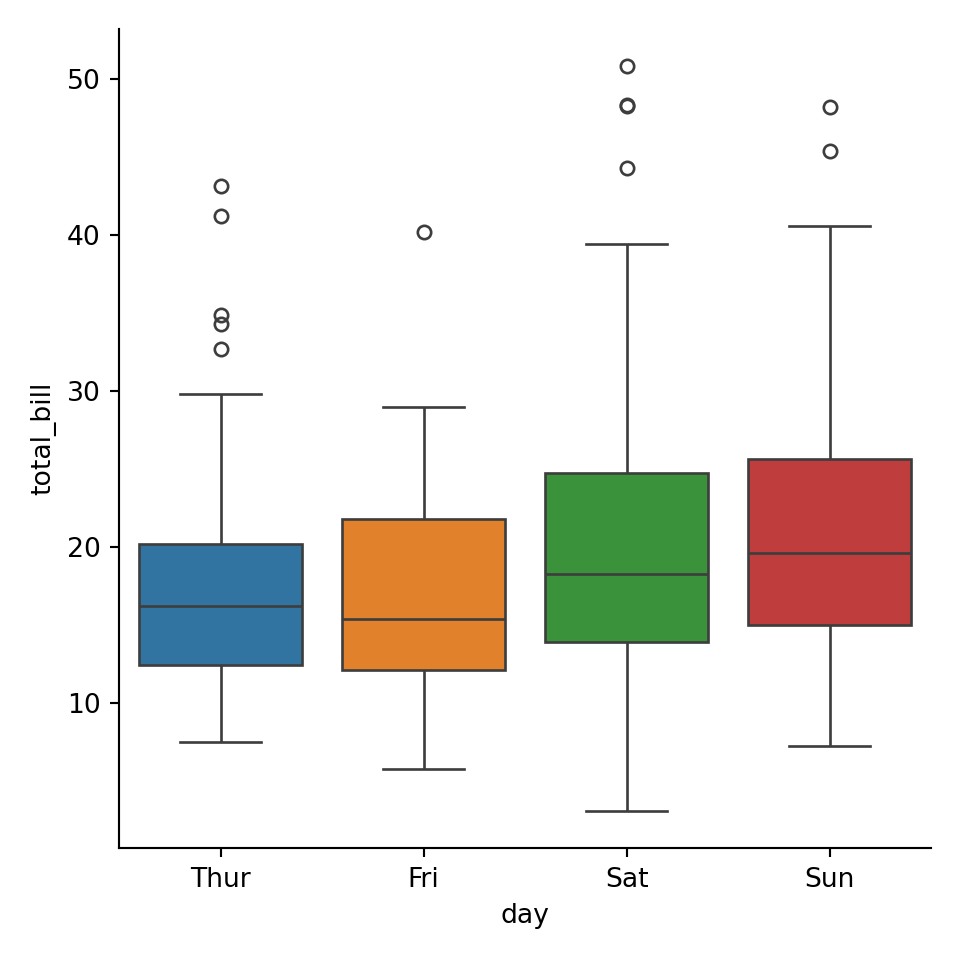
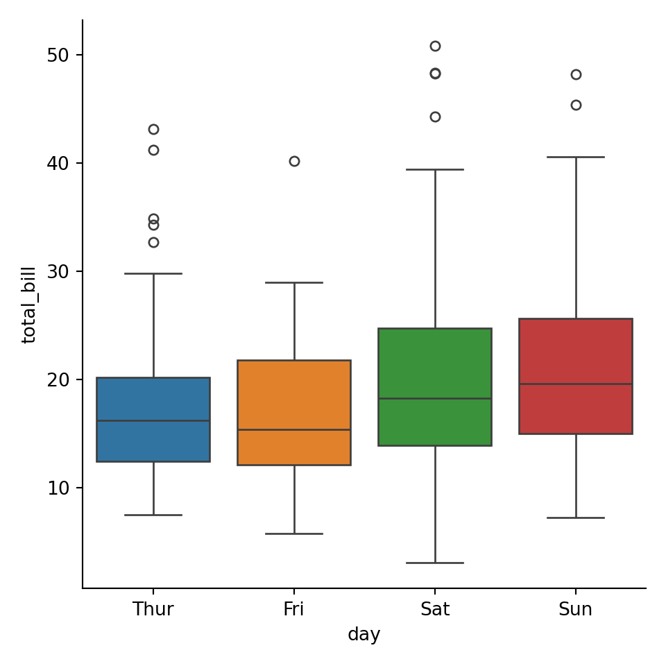

 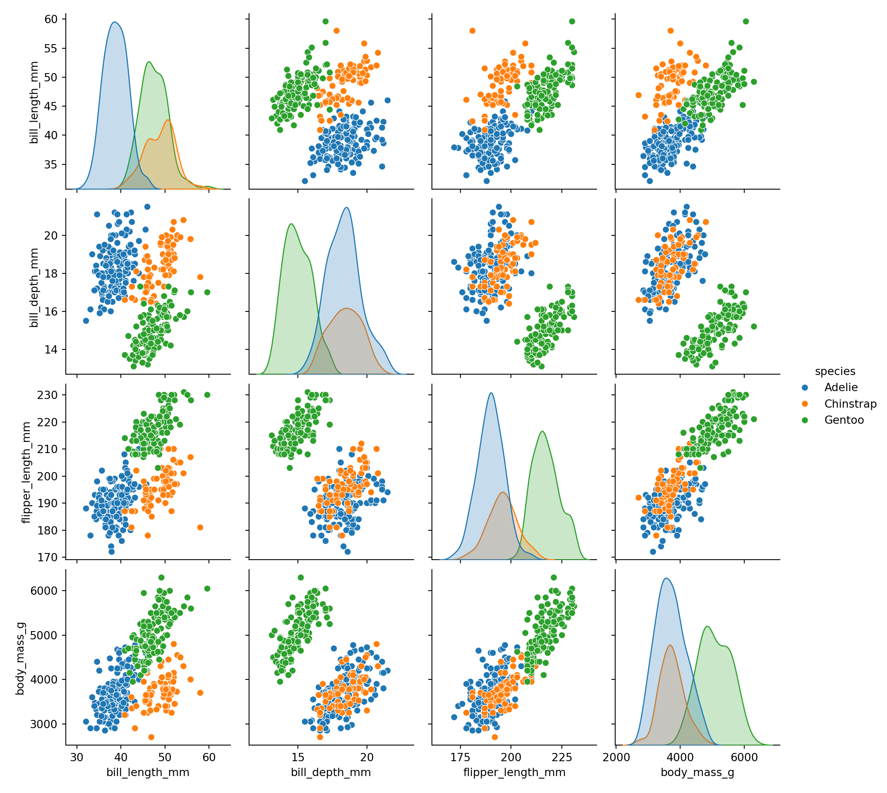
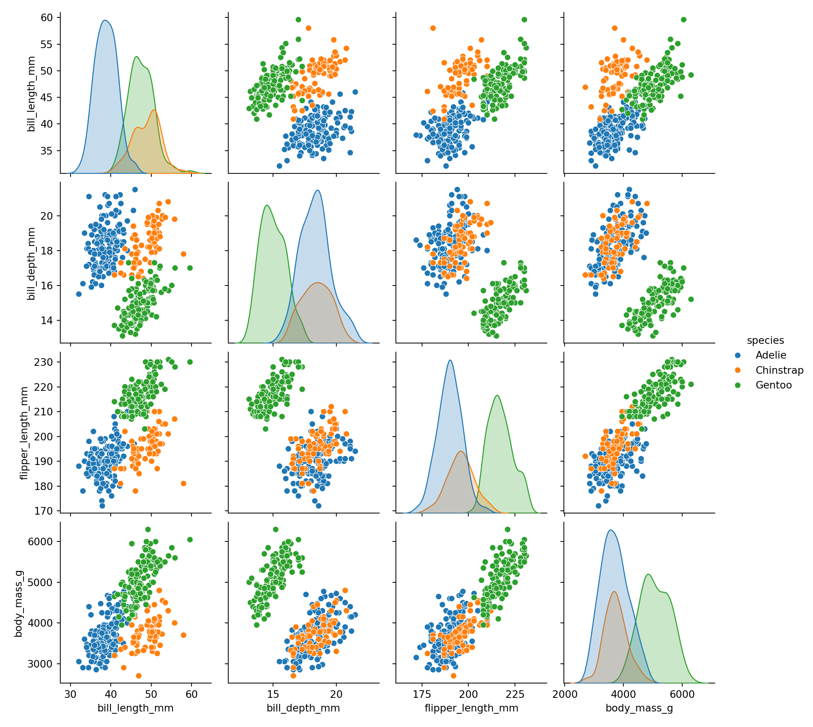27.1.3.9 palette
Changing the color with Matplotlib’s color
A list of color: https://matplotlib.org/stable/tutorials/colors/colormaps.html
 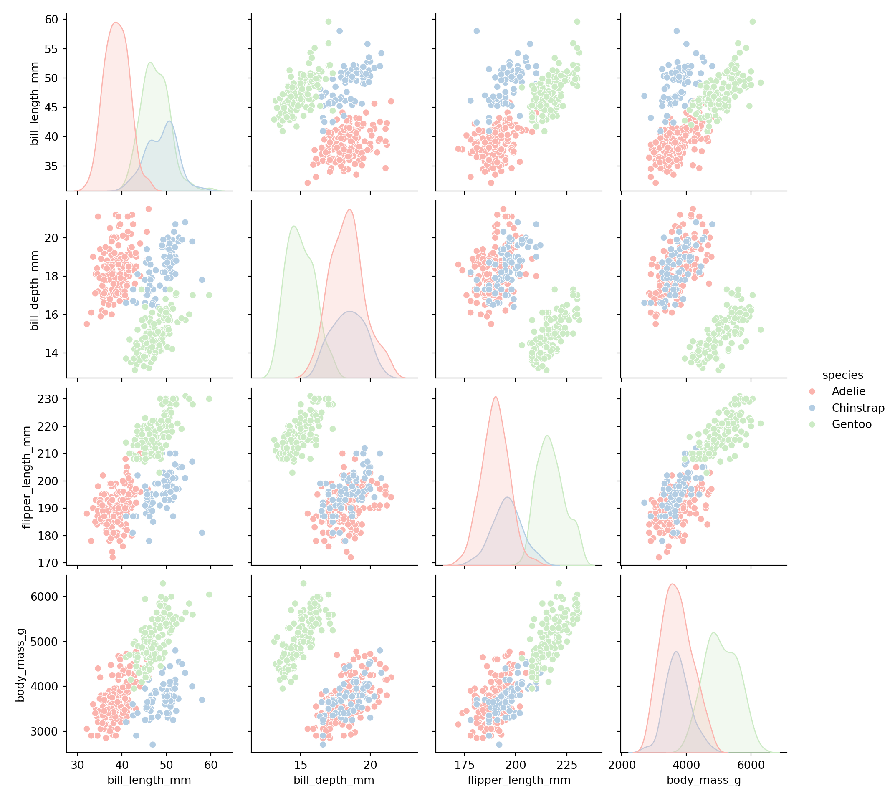
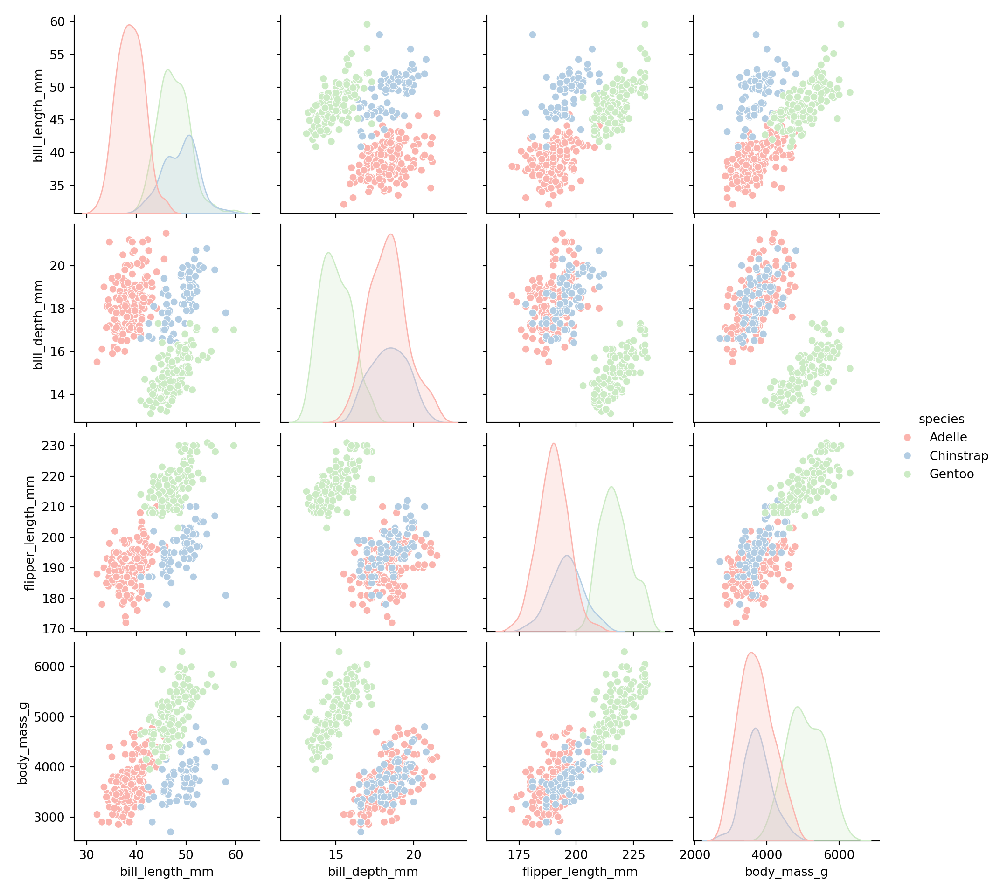27.2 export
27.2.1 .svg
https://stackoverflow.com/questions/24525111/how-can-i-get-the-output-of-a-matplotlib-plot-as-an-svg
27.2.2 .eps
https://stackoverflow.com/questions/16183462/saving-images-in-python-at-a-very-high-quality
The PostScript backend does not support transparency; partially transparent artists will be rendered opaque.